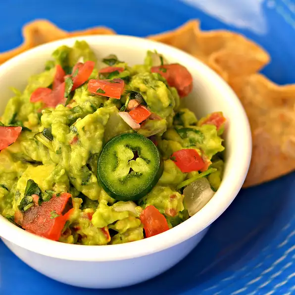

A household favorite!
This guacamole rocks!
Whether you like it spicy or not, this recipe will turn everyone
into guacamole lovers.
This recipe uses simple, easy to get ingredients to create a fresh tasty dip for your
favorite chips.
Ingredient List
- 2 avocados, peeled and pitted
- 1 cup chopped tomatoes
- 1/4 cup chopped onion
- 1/4 cup chopped cilantro
- 2 tablespoons lemon juice
- 1 jalapeno pepper, seeded and minced (Optional)
- Salt & pepper for taste
- 1 lime halved
Instructions
- Mash avocados until desired texture
- Squeeze lime and lemon into the mashed avocados; careful not to
let seeds fall into the bowl
- Add the rest of ingredients and mix well
- Enjoy!
Return to top
Return to main page